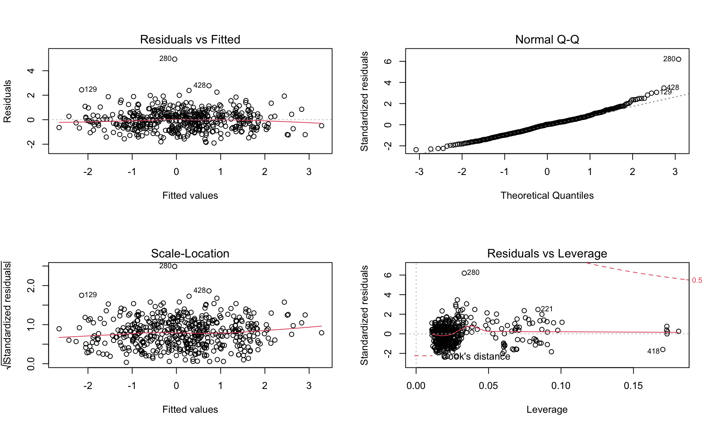

Searching for more potential predictors and finding the association between innocent death and other factors, we decide to concern about the variables (Gun ownership rates, crime rate, unemployment rate in each state) and just concentrate on 2020 but in order to avoid the collinearity, we drop the highly potential correlated variable (State).
Gun ownership rates vary by state and Montana has the highest.
gun_plt =
gun_owner %>%
mutate(state = fct_reorder(state, gun_ownership)) %>%
ggplot(aes(x = gun_ownership, y = state, fill = as.numeric(state))) +
geom_col(alpha = 0.6, show.legend = FALSE) +
scale_fill_gradient(low = "#77969A", high = "#516E41") +
labs(x = "Gun Ownership Rate",
y = "State")
ggplotly(gun_plt) %>% layout(showlegend = F)The crime rate varies from state to state, with Alaska showing the highest rate
crime_plt =
crime_stat %>%
filter(state != "District of Columbia") %>%
mutate(state = fct_reorder(state, crime_per_10e6)) %>%
ggplot(aes(x = crime_per_10e6, y = state, fill = as.numeric(state))) +
geom_col(alpha = 0.6, show.legend = FALSE) +
scale_fill_gradient(low = "#77969A", high = "#516E41") +
labs(x = "Crimte rate per 100k",
y = "State")
ggplotly(crime_plt) %>% layout(showlegend = F)Unemployment rates in each state show a diversified trend and Nevada has the highest unemployment rate.
unemployment_plt =
unempolyment_stat %>%
filter(state != "District of Columbia") %>%
mutate(state = fct_reorder(state, unemploy_rate)) %>%
ggplot(aes(x = unemploy_rate, y = state, fill = as.numeric(state))) +
geom_col(alpha = 0.6, show.legend = FALSE) +
scale_fill_gradient(low = "#77969A", high = "#516E41") +
labs(x = "Unemployment rate",
y = "State")
ggplotly(unemployment_plt) %>% layout(showlegend = F)Because the distribution of innocent death per 10K is the same in model 1, here we still conduct log transformation and the formula is followed below:
\[ log(innocent \space death \space per \space 100k) = \beta_0 + \beta_1 age + \beta_2 gender + \beta_3 race + \beta_4Gun \space ownership \space rate\] \[ + \beta_5Crime \space rate(per \space 100K) + \beta_6 Unemployment \space rate\]
# Fit a model
fit2 <- lm(log(innocent_kill_per100k) ~ age_bin + gender + race + gun_ownership + crime_per_10e6 + unemploy_rate,
data = reg_df2)
summary(fit2) %>%
broom::tidy() %>%
knitr::kable() %>%
kable_styling() %>%
scroll_box(height = "200px")| term | estimate | std.error | statistic | p.value |
|---|---|---|---|---|
| (Intercept) | -1.8916037 | 0.4058711 | -4.6606017 | 0.0000041 |
| age_bin15-24 | 1.3786319 | 0.2404796 | 5.7328439 | 0.0000000 |
| age_bin25-34 | 1.7053292 | 0.2392325 | 7.1283349 | 0.0000000 |
| age_bin35-54 | 1.3006614 | 0.2394451 | 5.4319813 | 0.0000001 |
| age_bin55-84 | 0.5309971 | 0.2496321 | 2.1271188 | 0.0339337 |
| age_bin85+ | 2.6462839 | 0.4043469 | 6.5445889 | 0.0000000 |
| genderMale | 0.9949492 | 0.0861592 | 11.5477968 | 0.0000000 |
| raceAsian/Pacific Islander | -0.6056649 | 0.2006758 | -3.0181265 | 0.0026825 |
| raceEuropean-American/White | -1.4351088 | 0.0888841 | -16.1458370 | 0.0000000 |
| raceHispanic/Latino | -0.8322968 | 0.1136547 | -7.3230310 | 0.0000000 |
| raceNative American/Alaskan | 0.8784691 | 0.2162339 | 4.0625873 | 0.0000569 |
| gun_ownership | 3.1025410 | 0.4551975 | 6.8158127 | 0.0000000 |
| crime_per_10e6 | -0.0001550 | 0.0003117 | -0.4971922 | 0.6192875 |
| unemploy_rate | -6.5967308 | 2.9232804 | -2.2566192 | 0.0244934 |
summary(fit2) %>%
broom::glance() %>%
knitr::kable() %>%
kable_styling()| r.squared | adj.r.squared | sigma | statistic | p.value | df | df.residual | nobs |
|---|---|---|---|---|---|---|---|
| 0.6312087 | 0.6209425 | 0.811512 | 61.48452 | 0 | 13 | 467 | 481 |
According to the statistics in the table above, we could conclude that P-value is \(2.2 \times 10^{-16}\) and smaller than significant level which means the association is significant in statistical aspect although crime rate seems have no significant association.
When concentrating on the table of R.squared, we could figure out that adjusted \(R^2\) value is 0.62 which means that 62% of the variability in the outcome data can be explained by the model so that this value is generally considered a Moderate effect size and the fit is not as good as model1. If R-squared value 0.5 < r < 0.7 this value is generally considered a Moderate effect size (Ref:Moore, D. S., Notz, W. I, & Flinger, M. A. (2013). The basic practice of statistics (6th ed.))
The four graphs is used for proving the homoscedasticity of residual. When looking deep into those graphs, we’re able to conclude that all assumption is satisfied but it’s not as good as model 1.
# Model diagnosis
par(mfrow = c(2, 2))
plot(fit2)